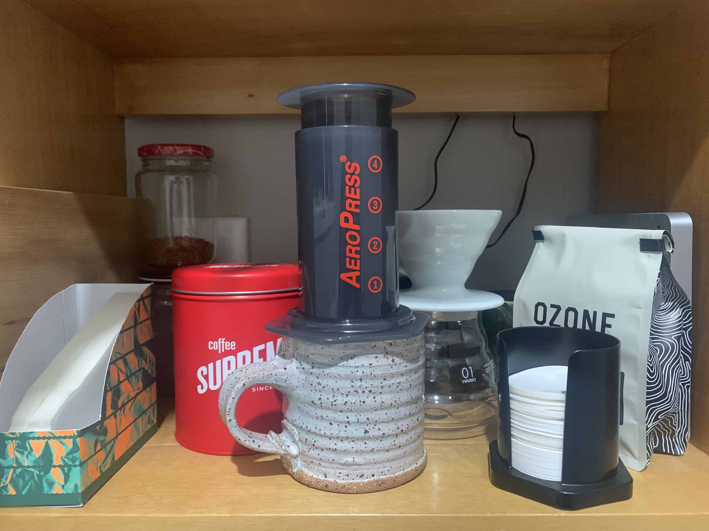

JavaScript & the DOM
tech blog
19 February 2022
HTML and CSS work together to make a website but perform very different functions. You can think about HTML and CSS like a team who are working together to create a book. HTML is the author and CSS is the designer. The writer (HTML) decides the structure of the story and what pictures will be included and then the designer (CSS) takes that information and adds the style to it. While the author decides the order of the content the designer can decide how they are positioned next to each other, the colours, fonts, styles etc... We then use JavaScript to make the book interactive - say give it pop ups, animations or links to other resources. Lets take a look at some important JavaScript ideas:
Control flow is the order in which a set of instructions is executed. Imagine making a cup of coffee, you could follow these steps:
- Put water in the kettle
- Put the kettle on to boil
- Get out a mug
- Put a filter paper in aeropress
- Put aeropress on top of mug
- Put a scoop of ground coffee inside aeropress
- Pour hot water over coffee grounds
- Stir once
- Stir once
- Stir once
- Put in plunger
- Let steep for 2 minutes
- Push the plunger down until all the liquid is in the mug
Control flow is very important because it helps us make sure their our instructions are followed in the way we intended. If you didn’t use control flow and execute tasks in the order presented then you could have a disaster on your hands - you could pour the water before boiling the jug or stir before you have added the coffee grounds.
A loop is way we can describe repeating a task without having to write out every repetition. In our making coffee example we have written out the instruction to stir on three separate lines - we could make this more concise by using a loop. Our loop in this case we would say please repeat the ‘stir once’ task 3 times.
The DOM stands for document object model is a representation of a web page which looks like a tree of elements. It can be difficult to picture because it’s not something we as internet users are used to seeing but we interact with it every day. Imagine taking a photo of your family - this would be like the web page and then on the back of the photo we could draw a family tree of everybody in the photo with their names and relationships to one another - you could then use this tree to go and talk to people in the photo and know who they are - this is what it is like interacting with the dom. Users interact with it by clicking on buttons, typing into text fields, using different keys etc... It is the programmers job to make sure these interactions work and is done by making functions which listen to see if an event like a click happens which is linked it to a certain element and then executing subsequent tasks
Arrays and objects are both containers in which we hold data but they store it differently. We can imagine them like an endless set of drawers. Arrays store information by putting one piece of data in each drawer and then uses a numbering system or index to access that information again. When we want to access data in an array we can call it using it’s index number. The first drawer is number 0, the second drawer number 1, the third drawer number 2 and so on... The syntax for this is: array[index];
Objects store information by using key:value pairs. They put a piece of information (value) inside a drawer and then label the drawer with a key. Unlike arrays the data inside an object is unordered so to access the information we need to call it using it’s key (sometimes called property). The syntax for this is: object.key; or object[key];
The other fun thing about arrays and objects is you can store more arrays and objects inside them - like having a drawer full of drawers, full of drawers...
Functions are sets of possibly repeatable instructions which can be called throughout a program. Take our instructions on how to make a cup of coffee from before - it was quite a long list of instructions and some of the instructions like boiling the kettle aren’t just used for making coffee so we could group little tasks together which we then could re-use for different purposes - this little set of instructions is basically what a function is. If we rewrote how to make a coffee but used functions it could look something like this:
- function: Boil the jug {Put water in the kettle, Put the kettle on to boil}
- Get out a mug
- function: Aeropress {Put a filter paper in aeropress, Put aeropress on top of mug, Put a scoop of ground coffee inside aeropress, Pour hot water over coffee grounds, function: Stir x3, Put in plunger, Let steep for 2 minutes, Push the plunger down until all the liquid is in the mug}
- function: Stir {loop: stir x number of times}
Then if we were making something like noodles and we knew we had to boil the jug rather than writing out all of the steps to boil the jug again we could just call upon the Boil the jug function.